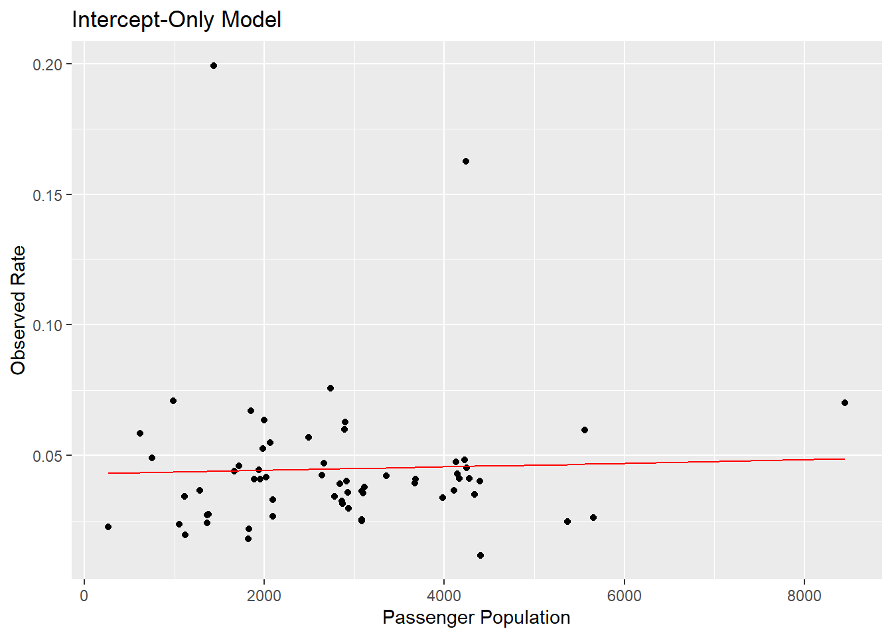
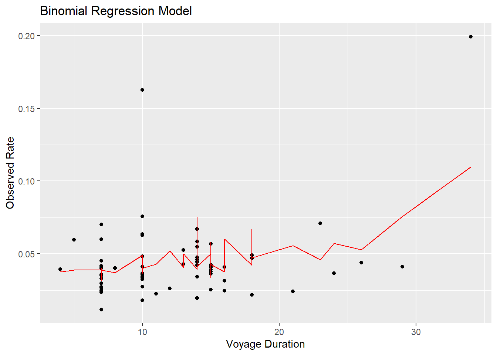

Program Validation
Our data is organized, our models are fit. I find it appropriate to look at the data that’s being returned by the code that’s been written, to ensure everything is rational to the intent. This portion is a practice I have become fond of in my personal experience, but it is not necessary since it doesn’t follow any statistical methodology
We’ll observe the predictions our models have made.
## yhat_rate actual_rate size
## 1 0.04577220 0.04125690 4169
## 2 0.04588604 0.03504727 4337
## 3 0.04493127 0.03586066 2928
## 4 0.04492043 0.04017857 2912
## 5 0.04407544 0.04384384 1665
## 6 0.04419945 0.06709957 1848## yhat_rate actual_rate size
## Min. :0.04313 Min. :0.01182 Min. : 265
## 1st Qu.:0.04419 1st Qu.:0.03195 1st Qu.:1838
## Median :0.04487 Median :0.04018 Median :2839
## Mean :0.04486 Mean :0.04486 Mean :2824
## 3rd Qu.:0.04554 3rd Qu.:0.04785 3rd Qu.:3832
## Max. :0.04868 Max. :0.19930 Max. :8454## yhat_rate size.cat actual_rate total_days lat long
## 1 0.07566357 5 0.04125690 29 days 33.7405 -118.2786
## 2 0.03889552 5 0.03504727 7 days 33.7405 -118.2786
## 3 0.03590919 4 0.03586066 7 days 39.2876 -76.6108
## 4 0.03703431 4 0.04017857 8 days 39.2876 -76.6108
## 5 0.05298255 3 0.04384384 26 days -22.8955 -43.1822
## 6 0.03939088 3 0.06709957 14 days 32.7157 -117.1611## yhat_rate size.cat actual_rate total_days
## Min. :0.03173 1: 3 Min. :0.01182 Length:63
## 1st Qu.:0.03732 2: 9 1st Qu.:0.03195 Class :difftime
## Median :0.04148 3:15 Median :0.04018 Mode :numeric
## Mean :0.04486 4:18 Mean :0.04486
## 3rd Qu.:0.04827 5:18 3rd Qu.:0.04785
## Max. :0.10990 Max. :0.19930
## lat long
## Min. :-33.05 Min. :-149.44
## 1st Qu.: 25.94 1st Qu.:-117.16
## Median : 32.72 Median : -80.19
## Mean : 29.22 Mean : -82.01
## 3rd Qu.: 40.69 3rd Qu.: -75.36
## Max. : 60.10 Max. : 139.69For each model, the results of our predicted rates are rational to the models themselves. Low variance on model 1 is to be expected, model 2 looks appropriate given the syntax it’s constructed from.
Visualizing it in our plots may not be inherently useful to the analysis of our data, but I’ve learned that it’s exceptionally good at parsing out any errors that might have occured in our code blocks.


The plots don’t return any errors, and our lines of fit coincide with what the data frames have been telling us. Interpreting them isn’t the current goal, so whether or not the second model is “over-fit” isn’t relevant at the moment.
Troubleshooting
The majority of errors you’ll experience during this process with come from two sources:
Out of order set-up
As stated previously, if you don’t build your code in the order it has been presented so far, you will encounter continuous errors. In the event you make this error, clear the environment. Rebuild your variables and data frames. Double check you have followed the correct path laid out by this tutorial.
Incorrect specification of file pathing
There are 5 files that have been provided through dropbox URLs. If you:
Have not downloaded them.
Have not placed them into a folder your environment can path to.
Have not deleted the file paths in the code provided so far and re-specified the appropriate paths for your system.
You will encounter errors that won’t resolve until you complete those three steps.
Remember the golden rules of troubleshooting all technology:
Power cycle then repeat the fault
When in doubt, check for updates
If all else fails, Google the error message
Fully power cycling a device or program is not only definitively and objectively a mystical solution to 99% of all technological errors the instant the IT support tech shows up, it’s also essential in the process of “repeat the fault”. If you can figure out how to make the error repeatedly, you can work to locate the source.
Updates fix programs and hardware while breaking other things in the process, further updates fix them and break different aspects than the previous one. Failing to maintain updates keeps things broken forever.
Google is free. People become Chess Grand masters with free online tools they access from Google.